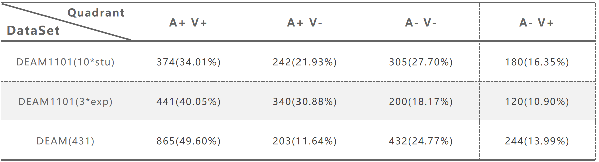

Introduction
The MER1101 Music Emotion Dataset is a dataset established to explore the relationship between music and human emotion. It is based on Russell's valence-arousal emotion model. It contains 1101 music snippets gathered from the internet, with each ranging in duration from 16.5 seconds to 125.5 seconds.Every song in the dataset has been annotated by three music experts and ten college students. The annotators listened to the entire song before starting with the annotation, to get familiar with the music and to reduce the reaction time lag. The workers were only payed the full fee after their work was reviewed and appeared to be of high quality.
Advantage
- The dataset contains more genres (16 genres), including pop, DJ dance music, Chinese style, electronic, hip-hop, rock, folk, metal, reggae, light music, blues, jazz, classical, country, R&B, unknown, a total of 16 genres.
- It contains richer language, meeting the ratio of nearly 5:3:1:1 for Chinese, English, Japanese and Korean, and other languages.
- The samples in our dataset distribute more balance in the emotional quadrants and there are no more than three songs by the same artist in each V-A quadrant.
- The volume of our dataset is larger than the current music datasets.
Annotation consistency
Consistency is measured according to Cronbach's α used in the DEAM dataset. Finally, take the average of the calculation results of each song (values less than 0 are calculated as 0) as the result, and calculate the result as shown in the table below:Sentiment distribution
The number of distributions in each quadrant of the labeled data
Quadrant distribution plot of labeled data